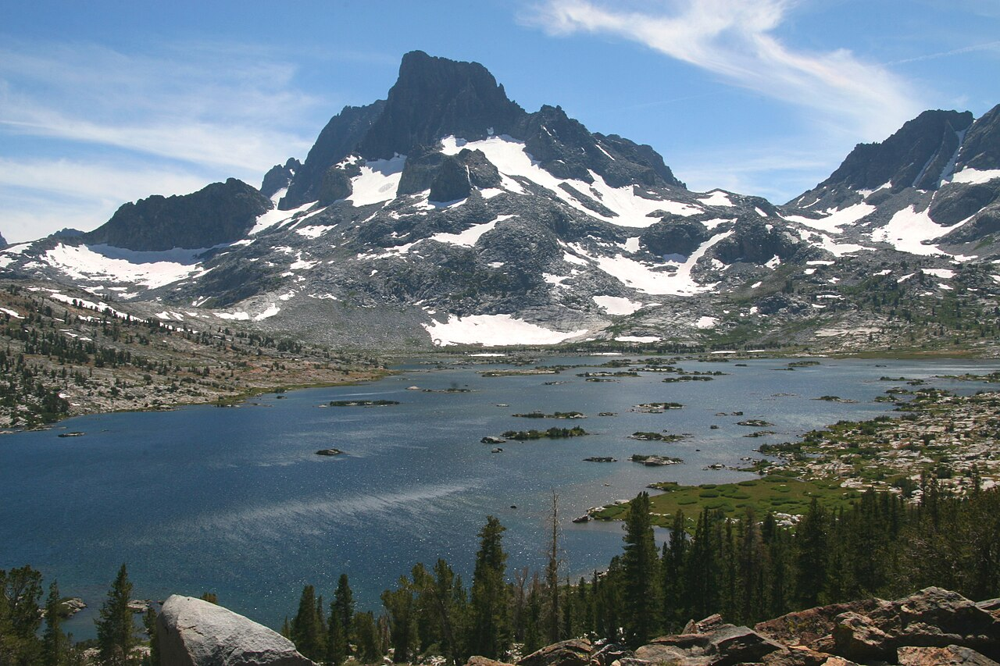

桂林—阳朔自驾以漓江喀斯特地貌为核心，可延伸龙脊梯田、兴坪古镇、遇龙河。夏季江面清澈、冬季有雾凇与柑橘季，是华南景观自驾的代表线路。
经典 3–5 日：桂林—象鼻山—两江四湖—阳朔—遇龙河—十里画廊—兴坪（20 元人民币背景）—龙脊梯田（可选 1 日）。漓江游船与自驾互补，兴坪至杨堤段江景最为浓缩。
4–10 月适宜，7–8 月游客最多。阳朔西街夜间热闹，住宿建议选江边或遇龙河附近民宿。尊重壮族、瑶族文化，龙脊梯田季节性强：5 月灌水、9 月金黄。
Itinerary
分日行程
桂林市区
象鼻山、两江四湖步行或游船，正阳步行街尝桂林米粉。傍晚看日月双塔夜景。
桂林 → 阳朔
可走 G321 或沿漓江方向慢行。下午阳朔西街、遇龙河竹筏（选正规码头）。十里画廊骑行或电动车慢游。
阳朔 → 兴坪 → 阳朔
兴坪古镇看 20 元人民币背景喀斯特峰林，黄布倒影需天气配合。可选漓江竹筏短漂。
阳朔 → 龙脊梯田
前往龙胜龙脊梯田，平安寨或金坑大寨择一。徒步观梯田曲线，农家菜体验瑶族风情。
龙脊 → 桂林/返程
清晨再看梯田晨雾，下午返回桂林或继续南下北海（另线）。
Photo Essay
沿途影像



Highlights
核心景点
漓江兴坪段
20 元人民币背景取景地，黄布倒影与峰林组合是桂林名片。最佳拍摄需无风、晴天。
遇龙河
「小漓江」，人工竹筏静漂，两岸田园与喀斯特峰林更近。选择正规漂流公司，穿戴救生衣。
龙脊梯田
壮族瑶族千年梯田，春如镜面、秋如金黄阶梯。金坑大寨视野更开阔，平安寨开发更早。
十里画廊
阳朔城南一段公路，两侧峰林如画卷展开。骑行或慢开，大榕树、月亮山等景点可择停。
象鼻山
桂林城徽，漓江与桃花江汇流处。近观或隔江拍照，是理解桂林「山在城中」的起点。
Route
途经站点
起点
两江四湖、象鼻山。
喀斯特核心
西街、遇龙河。
20 元背景
漓江精华段。
梯田（可选）
需另排 1 天。
Practical
实用信息
- 漓江竹筏与游船价格透明化，拒绝路边黑导。
- 龙脊梯田山路弯窄，会车谨慎，雨季注意滑坡。
- 阳朔旺季住宿紧张，节假日提前 2 周预订。
- 桂林米粉「先干拌后加汤」是正确吃法，可向店家请教。
- 喀斯特地区洞穴多，勿擅自进入未开发溶洞。
EV Tips
新能源出行提示
驾驶腾势 N7 等纯电 SUV 出发前，请特别注意以下事项：
- 桂林、阳朔城区快充便利，龙脊山区补能点少，进山前满电。
- 遇龙河、十里画廊适合慢游，电量消耗主要在往返龙脊的山区路段。
- 夏季高温注意电池散热，选有遮阳的充电位。